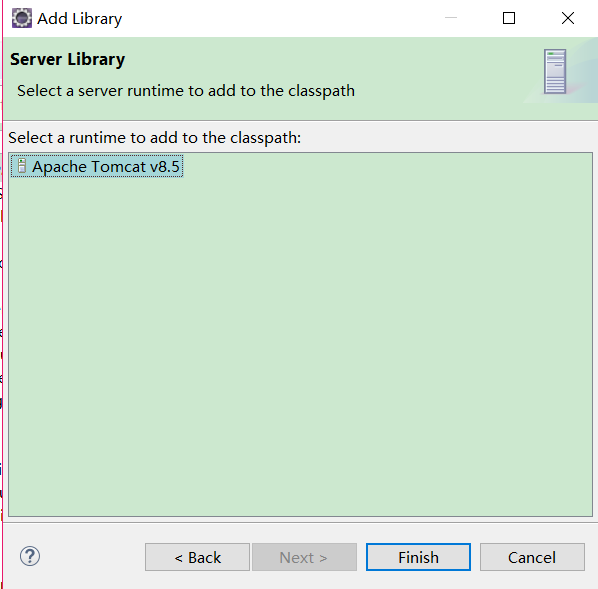

原文出处:本文由博客园博主刘认真提供。
原文连接:https://www.cnblogs.com/LiuOOP/p/10968360.html
原文连接:https://www.cnblogs.com/LiuOOP/p/10968360.html
培训之前，先自学一波，写一个从Hello World，然后记录一下每天学习Java Web的过程；东西很多，有用的会写大量解释，希望能最终学完 然后搞定这门语言吧。
1.配置tomacat：点击window-->preferences-->server-->Runtime Environments-->Add.. -->Apache Tomact 8.5（你的Tomact版本）-->选择Tomcat安装路径-->完成
并先新建一个Dynamic Web 项目
一定要先勾选这个 xml 否则还要去找配置 感觉很麻烦。
2.在Java Resources 的src中建立自己java代码 和正常Java项目一样 可以建立impl包，Dao包等等 等以后项目变大 慢慢会建
3.编写一下hellojavaweb
1 package com.etc.javaweb;
2
3 import java.io.IOException;
4 import javax.servlet.ServletException;
5 import javax.servlet.http.HttpServlet;
6 import javax.servlet.http.HttpServletRequest;
7 import javax.servlet.http.HttpServletResponse;
8
9 public class HelloJavaWeb extends HttpServlet {
10 private static final long serialVersionUID = 1L;
11
12 @Override
13 protected void doGet(HttpServletRequest request, HttpServletResponse response)
14 throws ServletException, IOException {
15 response.getWriter().append("Hello JavaWeb");
16 }
17
18 @Override
19 protected void doPost(HttpServletRequest request, HttpServletResponse response)
20 throws ServletException, IOException {
21 doGet(request, response);
22 }
23 }
4.配置xml
1 <?xml version="1.0" encoding="UTF-8"?>
2 <web-app xmlns:xsi="http://www.w3.org/2001/XMLSchema-instance" xmlns="http://xmlns.jcp.org/xml/ns/javaee" xsi:schemaLocation="http://xmlns.jcp.org/xml/ns/javaee http://xmlns.jcp.org/xml/ns/javaee/web-app_3_1.xsd" id="WebApp_ID" version="3.1">
3 <display-name>JavaWeb</display-name>
4 <servlet>
5 <servlet-name>HelloJavaWeb</servlet-name>
6 <servlet-class>com.etc.javaweb.HelloJavaWeb</servlet-class>
7 </servlet>
8
9 <servlet-mapping>
10 <servlet-name>HelloJavaWeb</servlet-name>
11 <url-pattern>/HelloJavaWeb</url-pattern>
12 </servlet-mapping>
13 </web-app>
5.Run一下
这是你的tomacat 中访问的地址 http://localhost:8080/JavaWeb/HelloJavaWeb
第一个项目就这样开端了 加油 坚持下去 。
附：如果没点击xml，可以手动点击红色部分创建哦，图片来源：https://www.cnblogs.com/anpajin/p/6354277.html
如果代码写的正确，还是一直报错啊会很烦，此时将项目导入服务包就会减小报错了哦！下图所示:

添加架包的方法就是点击 右边第四个 Add Library。。。 然后点击添加server服务
然后选择之前的tomcat8.5服务即可。

如果你不小心删除了eclipse的server服务项目：
跟建立项目一样 建立一个新的server即可 选择你的tomcat就可以了
以上全是根据一些教学PPT 某些大佬的案例 结合自己的认识创建的，希望能够坚持下去。